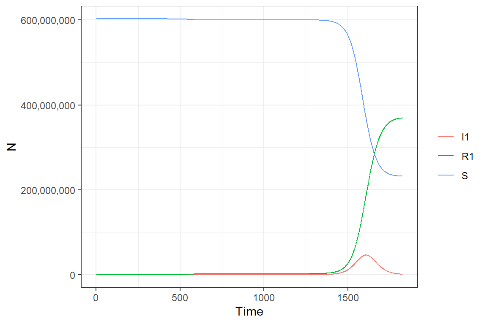
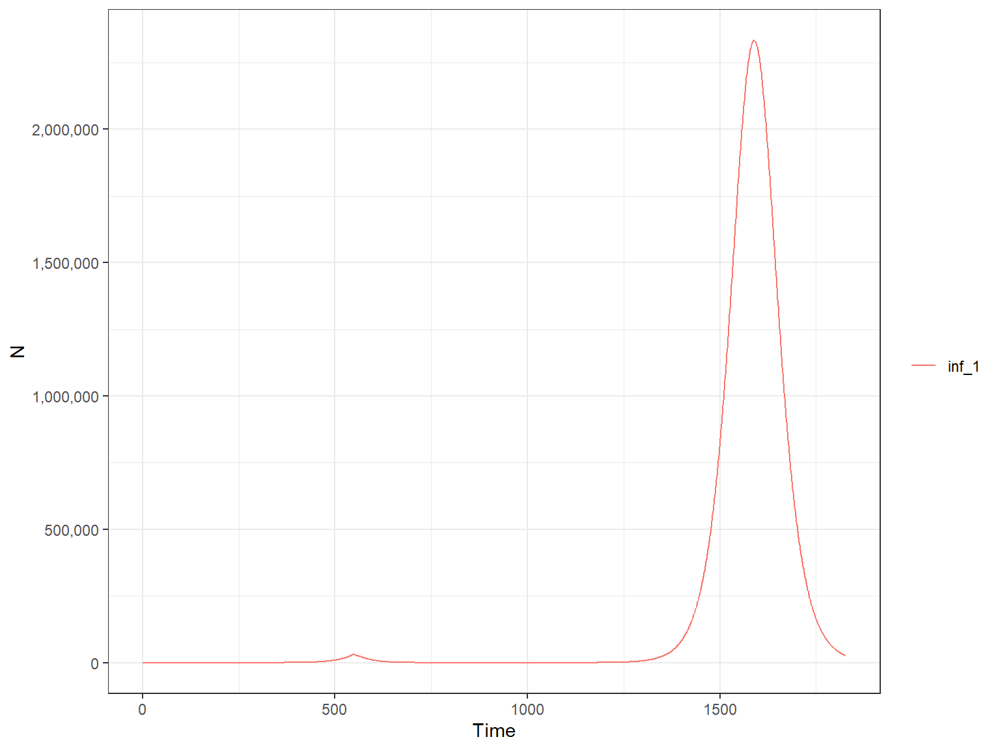
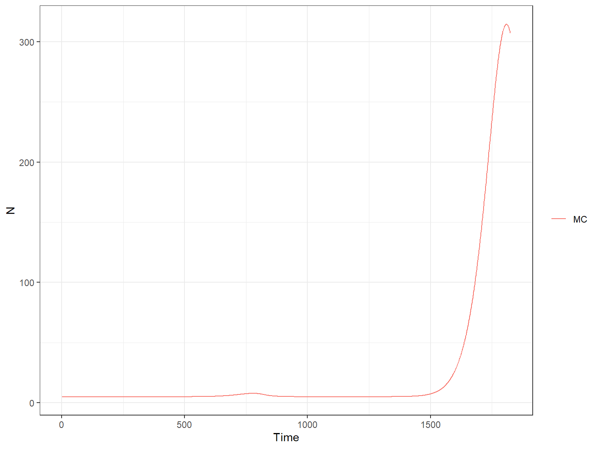
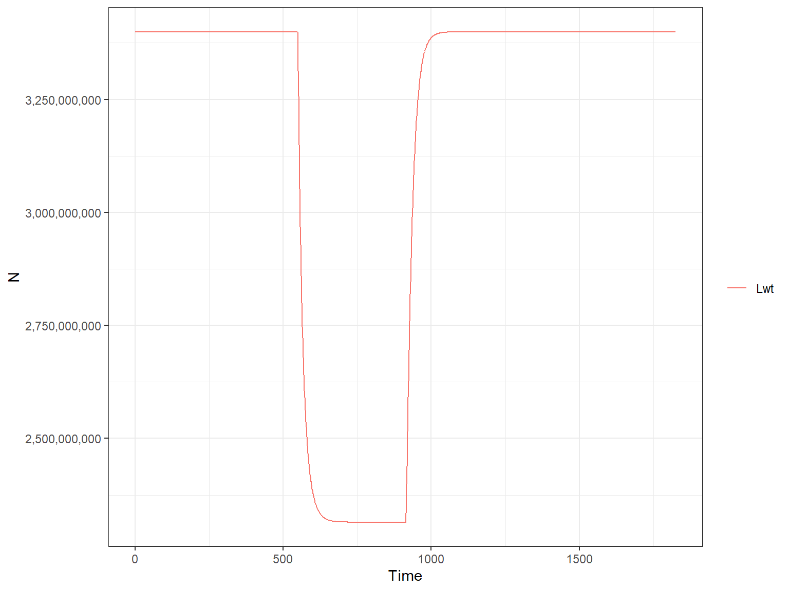
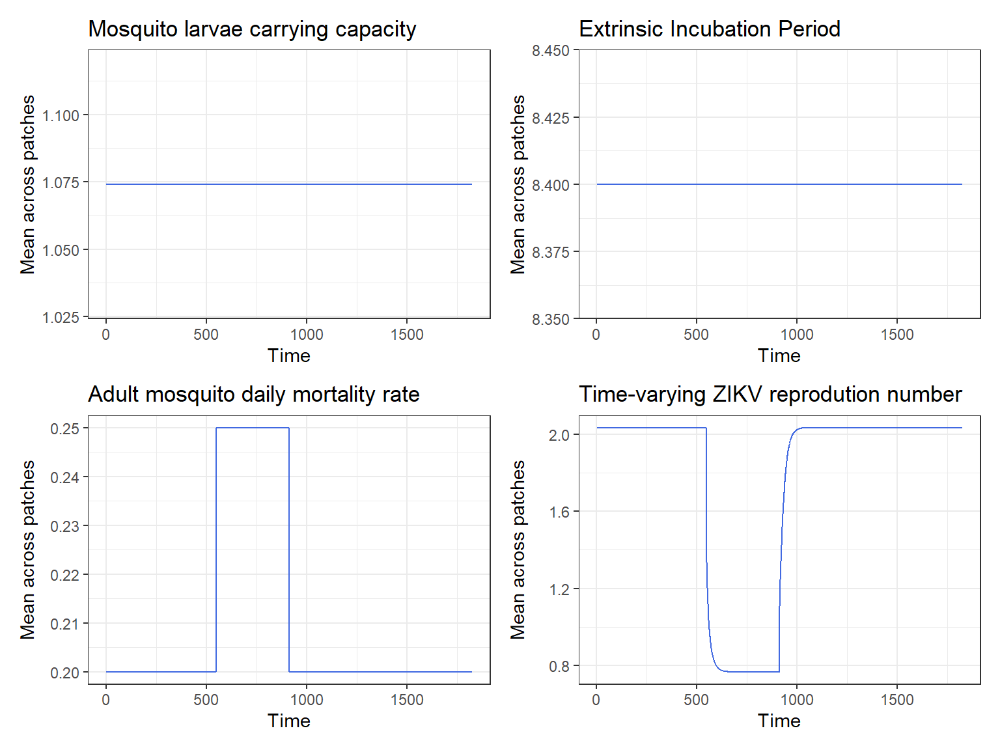

Modelling control strategies
Lorenzo Cattarino
2020-06-19
Source:vignettes/deterministic_generalControl.Rmd
deterministic_generalControl.RmdGeneral mosquito control
ZikaModel allows the user to change the value of all the model parameters. This allows more flexibility in the range of scenarios considered (e.g. inteventions to control the disease). Also, by taking advantage of this feature it is also possible to simulate the transmission dynamics of other immunizing single-strain infections transmitted by Aedes aegypti mosquitoes, such as chikungunya.
Here we will demonstrate how run a customized model which simulates general vector control. There are three parameters which simulate general vector control in the model:
-
propMwtControl- the increase in mortality of adult wild type mosquitoes induced by the control -
TimeMwtControlOn- the time when the control starts -
TimeMwtControlOff- the time when the control ends
Let’s assume that control increases mortality of adult mosquitoes by 20%. For now we will use the default values of TimeMwtControlOn and TimeMwtControlOff, which will simulate control for one year starting on the second year of the simulation.To keep it simple we will assume no effect of seasonality across patches. This is analogous to run the model with only one patch.
library(ZikaModel) r1 <- run_deterministic_model(time_period = 365 * 5, propMwtControl = 0.2)
Now plotting, as done before. Human compartments:
plot(r1, type = "H")

and mosquito compartments:
plot(r1, type = "M")

We can see how mosquito control has the effect of delaying the epidemic. As expected, the increase in adult mosquitoes mortality causes also a drop in the pool of susceptibles adult mosquitoes. We now plot other statistics as well:
plot(r1, type = "H", var_select = "inf_1")

plot(r1, type = "H", var_select = "MC")

plot(r1, type = "M", var_select = "Lwt")

We can see a drop in the mosquito larvae as well during the time of control. We now plot the variables directly modified by seasonality:
library(ggplot2) #> Warning: package 'ggplot2' was built under R version 3.6.3 library(patchwork) Kc <- format_output_M(r1, var_select = "Kc") Kc_p <- ggplot(Kc, aes(x = t, y = y)) + geom_line(color = 'royalblue', size = 0.5) + scale_x_continuous("Time") + scale_y_continuous("Mean across patches") + ggtitle("Mosquito larvae carrying capacity") + theme_bw() eip <- format_output_M(r1, var_select = "eip") eip_p <- ggplot(eip, aes(x = t, y = y)) + geom_line(color = 'royalblue', size = 0.5) + scale_x_continuous("Time") + scale_y_continuous("Mean across patches") + ggtitle("Extrinsic Incubation Period") + theme_bw() delta <- format_output_M(r1, var_select = "Delta") delta_p <- ggplot(delta, aes(x = t, y = y)) + geom_line(color = 'royalblue', size = 0.5) + scale_x_continuous("Time") + scale_y_continuous("Mean across patches") + ggtitle("Adult mosquito daily mortality rate") + theme_bw() Rt <- format_output_M(r1, var_select = "R0t_1") Rt_p <- ggplot(Rt, aes(x = t, y = y)) + geom_line(color = 'royalblue', size = 0.5) + scale_x_continuous("Time") + scale_y_continuous("Mean across patches") + ggtitle("Time-varying ZIKV reprodution number") + theme_bw() all <- Kc_p + eip_p + delta_p + Rt_p all
